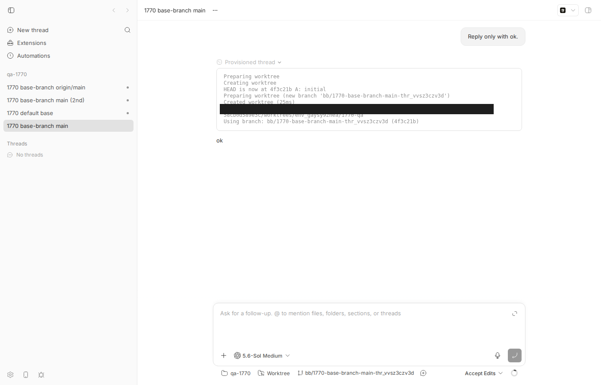
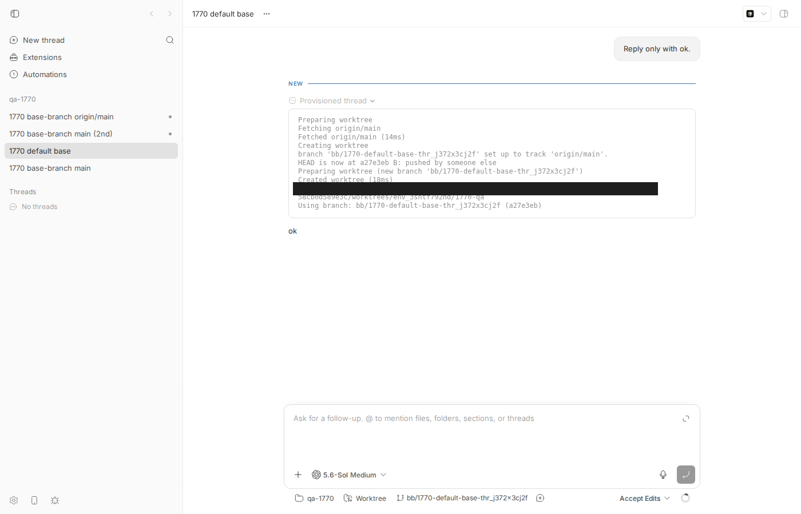

#1770 · --base-branch resolves against the stale local ref, so spawned worktrees silently start behind
TL;DR
Plain-language framing. A bb "managed worktree" is a fresh git worktree that bb creates next to your project checkout so an agent can work on its own branch. When you spawn a thread with bb thread spawn --new-environment worktree --base-branch main, the string main travels unchanged from the CLI, through the server, to the host daemon, which finally runs git worktree add -B <new-branch> <dir> main. Git resolves a bare main to the local branch refs/heads/main in the project checkout. Nothing on this path runs git fetch, and nothing compares local main with origin/main. So if the project checkout has not been pulled in a while, every spawned worktree starts on that old commit and the CLI prints nothing about it.
I reproduced this exactly on my dev instance: with a project checkout whose local main was one commit behind its remote, --base-branch main produced a worktree at the stale commit (twice: once before and once after the remote-tracking ref had been refreshed), while omitting --base-branch or passing --base-branch origin/main both produced a worktree at the remote tip and showed a "Fetching origin/main" step in the provisioning transcript. A two-case vitest at the exact daemon code path (createWorktree) fails on the base commit for main and passes for origin/main.
The irony is that bb already has the right behaviour, just not for this flag: the default (no --base-branch) path asks the daemon to fetch, compares local vs origin default branch, and picks origin/<default> when local is behind; and a remote-qualified name (origin/main) is fetched immediately before git worktree add. A plain branch name is the one input that gets neither treatment. This is not a regression: the fetch logic was added in June 2026 (commits 36450e50c, 7d3a1a9de) deliberately for remote-qualified names only, and no commit on origin/main after the base commit touches it, so the bug is still present.
Claims vs findings
| Claim | Status | Evidence |
|---|---|---|
--base-branch main creates the worktree from local main without fetching | Verified | Live repro (thr_vvsz3czv3d, thr_k8a4h2we5k): worktree HEAD = local main (A), remote is at B; provisioning transcript has no git-fetch-* step. Code: createWorktree only fetches when the name contains a remote prefix (packages/host-workspace/src/provisioning.ts#L250-L279). |
| Nothing warns the caller / no resolved base commit printed | Verified (mostly) | bb thread spawn --json prints only the thread record (no environment, no SHA). The provisioning transcript in the app and in the thread event log does contain Using branch: … (4f3c21b) — a short SHA, but no comparison against the remote and nothing on the CLI's stdout. |
| Reproduced on bb 0.38.0 | Unverifiable, but consistent | I tested at 16ceb3a54 (main, 2026-08-18) and code paths match; the behaviour is unchanged since 7d3a1a9de (June 2026), which predates 0.38.0. |
| 7 of 12 checkouts on the reporter's machine were behind by up to 89 commits | Unverifiable | Reporter's local measurement; not needed to reproduce the mechanism. |
| Anecdote: worker on a 65-commit-stale main would have ported shorter test files and left 6 assertions out | Unverifiable | Plausible consequence; not reproduced. |
| Implicit: this is the only base-branch path affected | Refuted | Omitting --base-branch is not affected (smart default picks origin/main when local is behind, verified: thr_j372x3cj2f). --base-branch origin/main is fetched and fresh (thr_cvhxdu946z). Only plain local names hit the bug. Automations (bb automation create … --base-branch) and the SDK/API baseBranch: {kind:"named"} share the same path. |
Environment
- bb
16ceb3a54(main, 2026-08-18), worktree/home/USER/projects/bb/.claude/worktrees/wf_242c3e11-a10-1checked out detached at the base commit. Note: the worktree was handed to me ata108fa7ef(origin/main, 5 commits later); I moved back to16ceb3a54before running the live repro. None of the intervening commits touch the files involved (git log 16ceb3a54..origin/main -- packages/host-workspace/src/provisioning.ts apps/server/src/services/projects/worktree-base-branch.ts apps/server/src/services/threads/thread-create.ts apps/cli/src/commands/thread/spawn.tsis empty). - Linux 7.0.0-29-generic, node v24.18.0, git (system), codex-cli 0.147.0 (provider
codex, model gpt-5.6-sol; each turn was "Reply only with ok.") - Dev instance: app
:17232, server:25232, host daemon:33232, data dir/home/USER/.bb-dev/projects-bb-.claude-worktrees-wf_242c3e11-a10-1-58cb0d589e3c, hosthost_hs77scf38b, projectproj_pwhvqn62tm(local path/tmp/1770-qa). - Threads:
thr_vvsz3czv3d(--base-branch main, envenv_gaysy9znea),thr_j372x3cj2f(no --base-branch, envenv_3sntf792nd),thr_k8a4h2we5k(--base-branch main again after origin/main was refreshed, envenv_6vvjdyw44i),thr_cvhxdu946z(--base-branch origin/main, envenv_6pme5rgfem). - CLI wrapper:
1770/repro/1770-bb.sh(BB_REPO=<your bb worktree> ./1770-bb.sh <args>; evaluatesscripts/bb-dev-app envand runspackages/scripts/dist/commands/run-cli.js). Below,bbmeans this wrapper.
Minimal reproduction
A. Unit-level (no dev instance, ~1 s): the daemon function that runs git worktree add
File: 1770/repro/issue-1770-local-base-branch.test.ts. Copy it to packages/host-workspace/test/ and run it from packages/host-workspace. It builds a bare "origin", a local checkout at commit A, pushes commit B to origin from a second clone (so the checkout is 1 behind), then calls createWorktree exactly as the host daemon does for bb thread spawn --base-branch main. The first test fails on the base commit at line 91: origin/main in the checkout is still A after provisioning (no fetch was run), and (line 92, not reached) the worktree HEAD is A, not B. The second test is a control that passes: baseBranch: "origin/main" is fetched and lands on B.
import fs from "node:fs/promises";
import os from "node:os";
import path from "node:path";
import { afterEach, describe, expect, it } from "vitest";
import { createWorktree, removeDirectory } from "../src/provisioning.js";
import { runGit } from "../src/git.js";
// Issue #1770: `bb thread spawn --new-environment worktree --base-branch main`
// ends up here as createWorktree({ baseBranch: "main" }). The daemon runs
// `git worktree add -B <branch> <target> main`, which resolves the LOCAL
// `main` ref and never fetches. When the project checkout is behind
// origin/main the new worktree silently starts on the stale commit.
// A remote-qualified base ("origin/main") is fetched first and is fresh.
const tempDirs: string[] = [];
async function makeTempDir(prefix: string): Promise<string> {
const dir = await fs.mkdtemp(path.join(os.tmpdir(), prefix));
tempDirs.push(dir);
return dir;
}
async function gitConfigUser(cwd: string) {
await runGit(["config", "user.name", "BB Tests"], { cwd });
await runGit(["config", "user.email", "bb@example.com"], { cwd });
}
/** Local checkout `repoPath` tracking bare `remotePath`; both at commit A. */
async function initRemoteBackedRepo() {
const repoPath = await makeTempDir("bb-1770-repo-");
await runGit(["init", "-b", "main"], { cwd: repoPath });
await gitConfigUser(repoPath);
await fs.writeFile(path.join(repoPath, "README.md"), "hello\n", "utf8");
await runGit(["add", "."], { cwd: repoPath });
await runGit(["commit", "-m", "A: initial"], { cwd: repoPath });
const remotePath = await makeTempDir("bb-1770-remote-");
await runGit(["init", "--bare"], { cwd: remotePath });
await runGit(["remote", "add", "origin", remotePath], { cwd: repoPath });
await runGit(["push", "-u", "origin", "main"], { cwd: repoPath });
return { remotePath, repoPath };
}
/** Someone else pushes commit B to origin/main; the local checkout is now 1 behind. */
async function pushRemoteMainCommit(remotePath: string): Promise<string> {
const cloneParent = await makeTempDir("bb-1770-clone-");
const clonePath = path.join(cloneParent, "repo");
await runGit(["clone", "--branch", "main", remotePath, clonePath], {
cwd: cloneParent,
});
await gitConfigUser(clonePath);
await fs.writeFile(path.join(clonePath, "remote.txt"), "remote\n", "utf8");
await runGit(["add", "."], { cwd: clonePath });
await runGit(["commit", "-m", "B: remote edit"], { cwd: clonePath });
await runGit(["push", "origin", "main"], { cwd: clonePath });
return (await runGit(["rev-parse", "HEAD"], { cwd: clonePath })).stdout.trim();
}
afterEach(async () => {
for (const dir of tempDirs.splice(0)) {
await removeDirectory({ path: dir });
}
});
describe("issue #1770: --base-branch <local name> ignores the remote", () => {
it("creates the worktree from the stale local main without fetching (FAILS on main: documents the bug)", async () => {
const { remotePath, repoPath } = await initRemoteBackedRepo();
const remoteHead = await pushRemoteMainCommit(remotePath);
const localMain = (
await runGit(["rev-parse", "main"], { cwd: repoPath })
).stdout.trim();
expect(localMain).not.toBe(remoteHead); // checkout is 1 behind origin
const targetPath = path.join(await makeTempDir("bb-1770-wt-"), "feature");
await createWorktree({
sourcePath: repoPath,
targetPath,
branchName: "feature",
baseBranch: "main", // what `bb thread spawn --base-branch main` sends
timeoutMs: 900000,
});
const worktreeHead = (
await runGit(["rev-parse", "HEAD"], { cwd: targetPath })
).stdout.trim();
const originMainAfter = (
await runGit(["rev-parse", "origin/main"], { cwd: repoPath })
).stdout.trim();
// What a user asking for "main" expects: the branch as it exists on the
// remote (or at least a fetch so origin/main is current). Both fail today.
expect(originMainAfter).toBe(remoteHead); // no fetch happened
expect(worktreeHead).toBe(remoteHead); // worktree is on stale local main
});
it("control: --base-branch origin/main is fetched and fresh (passes on main)", async () => {
const { remotePath, repoPath } = await initRemoteBackedRepo();
const remoteHead = await pushRemoteMainCommit(remotePath);
const targetPath = path.join(await makeTempDir("bb-1770-wt-"), "feature");
await createWorktree({
sourcePath: repoPath,
targetPath,
branchName: "feature",
baseBranch: "origin/main",
timeoutMs: 900000,
});
const worktreeHead = (
await runGit(["rev-parse", "HEAD"], { cwd: targetPath })
).stdout.trim();
expect(worktreeHead).toBe(remoteHead);
});
});
$ cd packages/host-workspace && pnpm exec vitest run test/issue-1770-local-base-branch.test.ts
RUN v4.1.1 /home/USER/projects/bb/.claude/worktrees/wf_242c3e11-a10-1/packages/host-workspace
❯ @bb/host-workspace test/issue-1770-local-base-branch.test.ts (2 tests | 1 failed) 258ms
× creates the worktree from the stale local main without fetching (FAILS on main: documents the bug) 125ms
⎯⎯⎯⎯⎯⎯⎯ Failed Tests 1 ⎯⎯⎯⎯⎯⎯⎯
FAIL @bb/host-workspace test/issue-1770-local-base-branch.test.ts > issue #1770: --base-branch <local name> ignores the remote > creates the worktree from the stale local main without fetching (FAILS on main: documents the bug)
AssertionError: expected '3d19bb30bd492a0c858bd7f5da61d923c0e2c…' to be 'a6b17de51d997231c1b80b25d695739f5ed39…' // Object.is equality
Expected: "a6b17de51d997231c1b80b25d695739f5ed392e4"
Received: "3d19bb30bd492a0c858bd7f5da61d923c0e2c4dc"
❯ test/issue-1770-local-base-branch.test.ts:91:29
89| // What a user asking for "main" expects: the branch as it exists …
90| // remote (or at least a fetch so origin/main is current). Both fa…
91| expect(originMainAfter).toBe(remoteHead); // no fetch happened
| ^
92| expect(worktreeHead).toBe(remoteHead); // worktree is on stale loc…
93| });
⎯⎯⎯⎯⎯⎯⎯⎯⎯⎯⎯⎯⎯⎯⎯⎯⎯⎯⎯⎯⎯⎯⎯⎯[1/1]⎯
Test Files 1 failed (1)
Tests 1 failed | 1 passed (2)
Start at 07:17:27
Duration 762ms (transform 260ms, setup 0ms, import 416ms, tests 258ms, environment 0ms)
B. End to end with the CLI (needs a running dev instance and one tiny codex turn per spawn)
- Build and start your instance:
pnpm install --frozen-lockfile --prefer-offline && pnpm exec turbo run build && scripts/bb-dev-app current. Thenexport BB_REPO=$PWD. - Create a checkout that is one commit behind its remote:
1770/repro/1770-setup-repos.sh.$ /tmp/bb-reports/issues/1770/repro/1770-setup-repos.sh local main 4f3c21b8c2a600e790b70a7805bbb1e48b0aa138 (A) local origin/main 4f3c21b8c2a600e790b70a7805bbb1e48b0aa138 (A: stale remote-tracking ref, no fetch yet) remote main a27e3eb107594286164d30d25f236f4ab88fcd18 (B)
- Register it as a project (host id from
bb machine list --json):$ curl -s -X POST $BB_SERVER_URL/api/v1/projects -H 'content-type: application/json' \ -d '{"name":"qa-1770","source":{"type":"local_path","path":"/tmp/1770-qa","hostId":"host_hs77scf38b"}}' {"id":"proj_pwhvqn62tm", … "gitRemoteUrl":"/tmp/1770-remote.git", …} - Spawn with an explicit local base branch (what the issue does):
$ bb thread spawn --project proj_pwhvqn62tm --new-environment worktree --base-branch main \ --provider codex --permission-mode accept-edits --title "1770 base-branch main" --prompt "Reply only with ok." --json { "id": "thr_vvsz3czv3d", "environmentId": null, "status": "starting", … } # nothing about the base commit $ bb thread show thr_vvsz3czv3d --json | grep -E '"path"|baseBranch' "path": "…/worktrees/env_gaysy9znea/1770-qa", "baseBranch": "main", - Compare the worktree with the refs (
1770/repro/1770-inspect.sh):$ /tmp/bb-reports/issues/1770/repro/1770-inspect.sh <path from thread show> $ git -C /tmp/1770-qa rev-parse main origin/main # project checkout: local main / remote-tracking ref 4f3c21b8c2a600e790b70a7805bbb1e48b0aa138 4f3c21b8c2a600e790b70a7805bbb1e48b0aa138 $ git -C /tmp/1770-remote.git rev-parse main # what is actually on the remote a27e3eb107594286164d30d25f236f4ab88fcd18 $ git -C /home/USER/.bb-dev/projects-bb-.claude-worktrees-wf_242c3e11-a10-1-58cb0d589e3c/worktrees/env_gaysy9znea/1770-qa rev-parse HEAD 4f3c21b8c2a600e790b70a7805bbb1e48b0aa138 $ git -C /home/USER/.bb-dev/projects-bb-.claude-worktrees-wf_242c3e11-a10-1-58cb0d589e3c/worktrees/env_gaysy9znea/1770-qa log --oneline 4f3c21b A: initial $ ls /home/USER/.bb-dev/projects-bb-.claude-worktrees-wf_242c3e11-a10-1-58cb0d589e3c/worktrees/env_gaysy9znea/1770-qa README.md
Expected: the worktree starts at B (a27e3eb, the commit on the remote), or at least the checkout'sorigin/mainis refreshed and the caller is told the base is behind. Actual: worktree HEAD is A (4f3c21b),remote.txtis missing,origin/mainin the checkout was not even refreshed (still A) — no fetch happened at all. - Provisioning transcript for that thread (from
system/thread-provisioningevents; also visible in the app under "Provisioned thread"): no fetch step, straight togit worktree add. Raw JSON:spawn-main-provisioning-transcript.txt.Preparing worktree Creating worktree HEAD is now at 4f3c21b A: initial Preparing worktree (new branch 'bb/1770-base-branch-main-thr_vvsz3czv3d') Created worktree Using workspace: …/worktrees/env_gaysy9znea/1770-qa Using branch: bb/1770-base-branch-main-thr_vvsz3czv3d (4f3c21b)

1770 base-branch main in the app with the "Provisioned thread" row expanded. Look at the transcript: there is no "Fetching" line, and HEAD is now at 4f3c21b A: initial — the stale local commit. Nothing says the remote is ahead.Controls (same project, same moment)
C1. Omit --base-branch → the server's smart default resolves to origin/main (the transcript shows "Fetching origin/main"), and the worktree is at B. Output: spawn-default-result.out, transcript spawn-default-provisioning-transcript.txt.
$ git -C /tmp/1770-qa rev-parse main origin/main # project checkout: local main / remote-tracking ref 4f3c21b8c2a600e790b70a7805bbb1e48b0aa138 a27e3eb107594286164d30d25f236f4ab88fcd18 $ git -C /tmp/1770-remote.git rev-parse main # what is actually on the remote a27e3eb107594286164d30d25f236f4ab88fcd18 $ git -C /home/USER/.bb-dev/projects-bb-.claude-worktrees-wf_242c3e11-a10-1-58cb0d589e3c/worktrees/env_3sntf792nd/1770-qa rev-parse HEAD a27e3eb107594286164d30d25f236f4ab88fcd18 $ git -C /home/USER/.bb-dev/projects-bb-.claude-worktrees-wf_242c3e11-a10-1-58cb0d589e3c/worktrees/env_3sntf792nd/1770-qa log --oneline a27e3eb B: pushed by someone else 4f3c21b A: initial $ ls /home/USER/.bb-dev/projects-bb-.claude-worktrees-wf_242c3e11-a10-1-58cb0d589e3c/worktrees/env_3sntf792nd/1770-qa README.md remote.txt

--base-branch. Compare with the previous screenshot: the transcript now shows Fetching origin/main / Fetched origin/main and HEAD is now at a27e3eb B: pushed by someone else.C2. --base-branch main again, now that C1's fetch has refreshed origin/main in the checkout (this is precisely the reporter's state: local main 583ce1f, origin/main c319d1a "3 ahead"). Still stale — the flag reads local main regardless of what the remote-tracking ref says. Output: spawn-main2-result.out.
$ git -C /tmp/1770-qa rev-parse main origin/main # project checkout: local main / remote-tracking ref 4f3c21b8c2a600e790b70a7805bbb1e48b0aa138 a27e3eb107594286164d30d25f236f4ab88fcd18 $ git -C /tmp/1770-remote.git rev-parse main # what is actually on the remote a27e3eb107594286164d30d25f236f4ab88fcd18 $ git -C /home/USER/.bb-dev/projects-bb-.claude-worktrees-wf_242c3e11-a10-1-58cb0d589e3c/worktrees/env_6vvjdyw44i/1770-qa rev-parse HEAD 4f3c21b8c2a600e790b70a7805bbb1e48b0aa138 $ git -C /home/USER/.bb-dev/projects-bb-.claude-worktrees-wf_242c3e11-a10-1-58cb0d589e3c/worktrees/env_6vvjdyw44i/1770-qa log --oneline 4f3c21b A: initial $ ls /home/USER/.bb-dev/projects-bb-.claude-worktrees-wf_242c3e11-a10-1-58cb0d589e3c/worktrees/env_6vvjdyw44i/1770-qa README.md
C3. --base-branch origin/main → fetched, fresh (B). Output: spawn-origin-result.out.
$ git -C /tmp/1770-qa rev-parse main origin/main # project checkout: local main / remote-tracking ref 4f3c21b8c2a600e790b70a7805bbb1e48b0aa138 a27e3eb107594286164d30d25f236f4ab88fcd18 $ git -C /tmp/1770-remote.git rev-parse main # what is actually on the remote a27e3eb107594286164d30d25f236f4ab88fcd18 $ git -C /home/USER/.bb-dev/projects-bb-.claude-worktrees-wf_242c3e11-a10-1-58cb0d589e3c/worktrees/env_6pme5rgfem/1770-qa rev-parse HEAD a27e3eb107594286164d30d25f236f4ab88fcd18 $ git -C /home/USER/.bb-dev/projects-bb-.claude-worktrees-wf_242c3e11-a10-1-58cb0d589e3c/worktrees/env_6pme5rgfem/1770-qa log --oneline a27e3eb B: pushed by someone else 4f3c21b A: initial $ ls /home/USER/.bb-dev/projects-bb-.claude-worktrees-wf_242c3e11-a10-1-58cb0d589e3c/worktrees/env_6pme5rgfem/1770-qa README.md remote.txt
Root cause
The string is passed through untouched. The CLI wraps the flag as { kind: "named", name: "main" } (apps/cli/src/commands/thread/spawn.ts#L108-L112). On the server, resolveManagedDefaultBaseBranchForCreate returns early for a named spec — the "smart" resolution (fetch + compare local vs origin default) only runs for { kind: "default" } (apps/server/src/services/threads/thread-create.ts#L378-L397):
async function resolveManagedDefaultBaseBranchForCreate(deps, args): Promise<BaseBranchSpec> {
if (args.baseBranch.kind === "named") {
return args.baseBranch; // <-- "main" is not inspected
}
… callHostRetryableOnlineRpc({ type: "host.list_branches", … }) // daemon runs `git fetch --all --prune` here
return resolveManagedDefaultBaseBranchSpec(result); // picks origin/<default> when local is behind
}
The smart default policy lives in resolveDefaultWorktreeBaseBranch (apps/server/src/services/projects/worktree-base-branch.ts#L10-L26): when defaultBranchRelation is equal or local-behind it returns originDefaultBranch (e.g. origin/main), which is why the no-flag control was fresh. baseBranchSpecToStoredName then flattens the spec to a plain string for the daemon command (apps/server/src/services/threads/thread-create-helpers.ts#L24-L28, apps/server/src/services/threads/thread-create-helpers.ts#L135-L146).
The daemon fetches only remote-qualified names. In createWorktree (packages/host-workspace/src/provisioning.ts#L364-L388) the base is used verbatim as the start point of git worktree add -B <branch> <target> <base>. Just before, fetchRemoteBaseBranch is called, but it delegates to resolveRemoteBaseBranch, which returns null (skip) for any name without a / or whose prefix is not a configured remote (packages/host-workspace/src/provisioning.ts#L250-L279):
async function resolveRemoteBaseBranch(sourcePath, baseBranch, signal) {
if (!baseBranch.includes("/")) {
return null; // <-- "main": no fetch, no comparison
}
const remotes = (await runGit(["remote"], …)).stdout…;
const matchingRemotes = remotes.filter((remote) => baseBranch.startsWith(`${remote}/`) …);
…
}
…
await fetchRemoteBaseBranch({ sourcePath, baseBranch, … }); // no-op for "main"
const gitArgs = ["worktree", "add", "-B", args.branchName, args.targetPath, baseBranch]; // git resolves "main" -> refs/heads/main
Git's ref resolution order for a bare name is refs/<name>, refs/tags/<name>, refs/heads/<name>, refs/remotes/<name>… so as long as a local branch main exists (it always does for a project checkout on main), origin/main is never considered, even when the remote-tracking ref is already ahead (control C2).
Why nothing warns. The only place the resolved commit surfaces is the daemon's transcript step Using branch: <branch> (<short sha>), which is stored in system/thread-provisioning events and shown in the app; the CLI's thread spawn prints the thread record only, and bb thread show / bb environment show report baseBranch: "main" as a name, never as a commit or a relation to the remote. There is no "behind" check anywhere on the named path.
History. 36450e50c (#153, "Always seed new worktrees from the fresh remote default") introduced the smart default and the list_branches fetch; 7d3a1a9de ("Fetch remote base before creating worktree") added the pre-worktree add fetch for remote-qualified names only, with a regression test using origin/main. Explicit local names were left alone by design; the issue is that the design surprises users, and the docs (docs/worktrees.md: "Pass --base-branch <name> only when you need a specific base") and the CLI help ("Base branch for new managed worktrees") do not say that a bare name means the local branch as-is with no fetch.
Deeper issue. Base-branch semantics differ per path: default → fetched, remote-preferred; origin/x → fetched; x → local, unfetched. Anything that names a branch (CLI --base-branch, automations --base-branch, SDK baseBranch: {kind:"named"}, and forks which pass the source environment's local branch name in apps/server/src/services/threads/thread-fork.ts#L85-L96) inherits the third behaviour.
Proposed fix (first principles)
- Make a plain
--base-branch <name>get the same treatment as the default. InresolveManagedDefaultBaseBranchForCreate(server, apps/server/src/services/threads/thread-create.ts#L378-L397), do not return early fornamed: callhost.list_branches(which already runsgit fetch --all --prune) and, when the named branch is the checkout's default branch, applyresolveDefaultWorktreeBaseBranch:equal/local-behind→origin/<name>; ahead/diverged → keep local. This fixes the reporter's exact case (--base-branch main) with server-only changes, no daemon or protocol change, and preserves "I want my local diverged main" semantics. For non-default named branches the daemon currently only reports the relation for the default branch, so either (a) extendhost.list_branchesto return the relation forselectedBranch(wire change → bumpHOST_DAEMON_PROTOCOL_VERSION), or (b) accept that non-default local names stay local and document it. - Alternatively/additionally, in the daemon (packages/host-workspace/src/provisioning.ts#L364-L388): when the base has no remote prefix, look up its upstream (
git rev-parse --abbrev-ref <base>@{upstream}), fetch that ref (reusefetchRemoteBaseBranch), computegit rev-list --left-right --count <base>...<upstream>, and if the local branch is behind-only, use the upstream as the start point; otherwise keep local. Emit transcript steps either way (base-resolved: "Base main is 3 commits behind origin/main; using origin/main" / "Base main is ahead of origin/main; using local"). This is host-local git plumbing, so it fits the daemon side of the boundary and needs no protocol bump (transcriptkeyis a free string). Risk: this would also changethread fork, which intentionally bases on the source environment's local branch — gate it on a flag from the server (e.g.preferUpstreamWhenBehind: truefor user-named bases, false for forks) if that matters; that flag would be a wire change and require the protocol bump. Fetch failures on this path must degrade to a warning step, not fail provisioning, so offline hosts still work. - Print the resolved base regardless. Have the daemon emit the resolved base commit and relation in the transcript, and have
bb thread spawn(non---jsonand--json) andbb environment showexpose the environment's base branch and base commit once provisioning finishes, so a caller can assertbaseCommit == origin/mainwithout the manualgit fetch && rev-parseboilerplate. Updatedocs/worktrees.md,bb-guide-threads.md, and the--base-branchhelp text to state precisely which ref a bare name resolves to.
Regression tests: the failing test above (expect a fetch and a fresh HEAD for main when local is behind), plus a case where local main is ahead/diverged and must stay local, and the existing origin/main test.
PR review
No open PRs are linked to this issue (searched gh pr list --search "base-branch fetch worktree"; nothing relevant).
Related issues
- #1624: support discovered worktrees and continuing existing branches (adjacent worktree/base semantics).
- Commits
36450e50c(#153) and7d3a1a9de: the existing fetch/smart-default work this issue asks to extend to plain names.
Appendix
Commands run
# worktree /home/USER/projects/bb/.claude/worktrees/wf_242c3e11-a10-1, detached at 16ceb3a54
pnpm install --frozen-lockfile --prefer-offline
pnpm exec turbo run build
git fetch origin main; git log 16ceb3a54..origin/main --oneline -- packages/host-workspace/src/provisioning.ts apps/server/src/services/projects/worktree-base-branch.ts apps/server/src/services/threads/thread-create.ts apps/cli/src/commands/thread/spawn.ts # empty
cp 1770/repro/issue-1770-local-base-branch.test.ts packages/host-workspace/test/ && cd packages/host-workspace && pnpm exec vitest run test/issue-1770-local-base-branch.test.ts
scripts/bb-dev-app current # app :17232, server :25232, daemon :33232
export BB_REPO=/home/USER/projects/bb/.claude/worktrees/wf_242c3e11-a10-1
1770/repro/1770-setup-repos.sh
1770/repro/1770-bb.sh machine list --json # host_hs77scf38b
curl -s -X POST http://localhost:25232/api/v1/projects -H 'content-type: application/json' -d '{"name":"qa-1770","source":{"type":"local_path","path":"/tmp/1770-qa","hostId":"host_hs77scf38b"}}' # proj_pwhvqn62tm
1770/repro/1770-bb.sh thread spawn --project proj_pwhvqn62tm --new-environment worktree --base-branch main --provider codex --permission-mode accept-edits --title "1770 base-branch main" --prompt "Reply only with ok." --json # thr_vvsz3czv3d
1770/repro/1770-bb.sh thread spawn --project proj_pwhvqn62tm --new-environment worktree --provider codex --permission-mode accept-edits --title "1770 default base" --prompt "Reply only with ok." --json # thr_j372x3cj2f
1770/repro/1770-bb.sh thread spawn --project proj_pwhvqn62tm --new-environment worktree --base-branch main --provider codex --permission-mode accept-edits --title "1770 base-branch main (2nd)" --prompt "Reply only with ok." --json # thr_k8a4h2we5k
1770/repro/1770-bb.sh thread spawn --project proj_pwhvqn62tm --new-environment worktree --base-branch origin/main --provider codex --permission-mode accept-edits --title "1770 base-branch origin/main" --prompt "Reply only with ok." --json # thr_cvhxdu946z
1770/repro/1770-bb.sh thread show <thr> --json | grep -E '"path"|baseBranch'
1770/repro/1770-inspect.sh <worktree path>
sqlite3 <data dir>/bb.db "select data from events where environment_id='<env>' and type='system/thread-provisioning' order by sequence"
dev-browser --browser bb1770 --headless run 1770/repro/shot1.js # screenshots
pnpm dev:stop
Setup script
#!/usr/bin/env bash # Issue #1770 repro, step 1: build a project checkout that is 1 commit behind # its remote. Creates: # /tmp/1770-remote.git bare "origin" # /tmp/1770-qa local checkout (the bb project source), at commit A # /tmp/1770-other a second clone that pushes commit B to origin/main # Afterwards /tmp/1770-qa's local main == A, origin/main (on the remote) == B. set -euo pipefail rm -rf /tmp/1770-remote.git /tmp/1770-qa /tmp/1770-other git init -q --bare /tmp/1770-remote.git git init -q -b main /tmp/1770-qa git -C /tmp/1770-qa config user.name "BB QA" git -C /tmp/1770-qa config user.email qa@example.com echo hello > /tmp/1770-qa/README.md git -C /tmp/1770-qa add . && git -C /tmp/1770-qa commit -qm "A: initial" git -C /tmp/1770-qa remote add origin /tmp/1770-remote.git git -C /tmp/1770-qa push -qu origin main git -C /tmp/1770-qa remote set-head origin main # so origin/HEAD -> main like a normal clone git clone -q /tmp/1770-remote.git /tmp/1770-other git -C /tmp/1770-other config user.name "Someone Else" git -C /tmp/1770-other config user.email other@example.com echo remote > /tmp/1770-other/remote.txt git -C /tmp/1770-other add . && git -C /tmp/1770-other commit -qm "B: pushed by someone else" git -C /tmp/1770-other push -q origin main echo "local main $(git -C /tmp/1770-qa rev-parse main) (A)" echo "local origin/main $(git -C /tmp/1770-qa rev-parse origin/main) (A: stale remote-tracking ref, no fetch yet)" echo "remote main $(git -C /tmp/1770-remote.git rev-parse main) (B)"
Inspect script
#!/usr/bin/env bash
# Issue #1770 repro, step 3: compare the spawned worktree's HEAD with the local
# and remote refs. Usage: ./1770-inspect.sh <worktree path printed by bb thread show>
set -uo pipefail
WT="${1:?worktree path}"
echo "\$ git -C /tmp/1770-qa rev-parse main origin/main # project checkout: local main / remote-tracking ref"
git -C /tmp/1770-qa rev-parse main origin/main
echo "\$ git -C /tmp/1770-remote.git rev-parse main # what is actually on the remote"
git -C /tmp/1770-remote.git rev-parse main
echo "\$ git -C $WT rev-parse HEAD"
git -C "$WT" rev-parse HEAD
echo "\$ git -C $WT log --oneline"
git -C "$WT" log --oneline
echo "\$ ls $WT"
ls "$WT"
Artifacts
unit-test-main.out,1770-setup-repos.out,create-project.out,spawn-main.outspawn-main-result.out,spawn-main2-result.out,spawn-default-result.out,spawn-origin-result.out- Provisioning transcripts:
main,main (2nd),default - Screenshot script
shot1.js; report generatorbuild-report.py